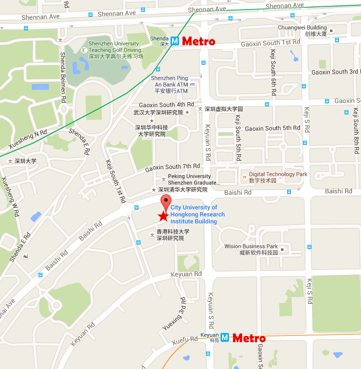
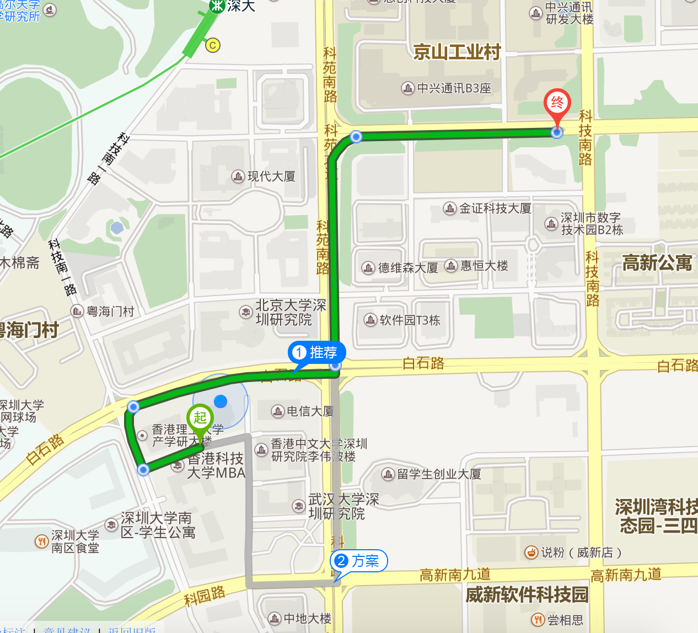
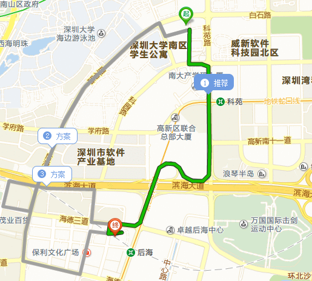
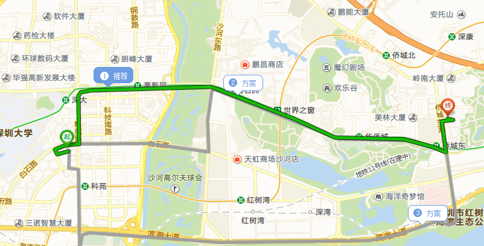
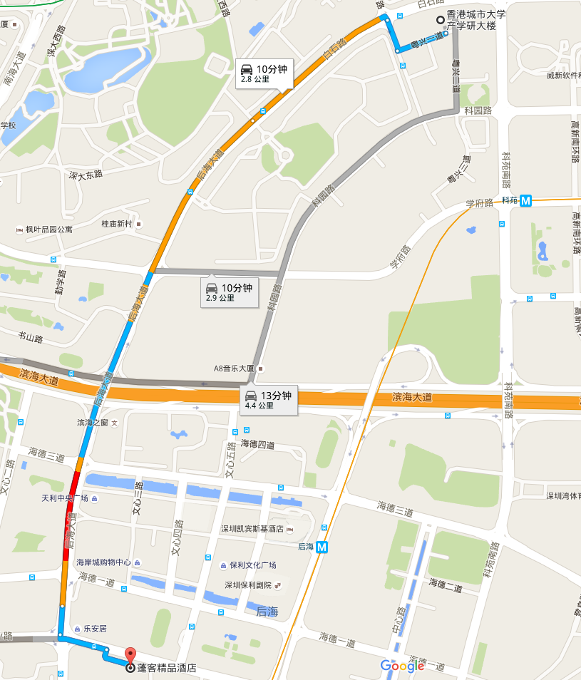
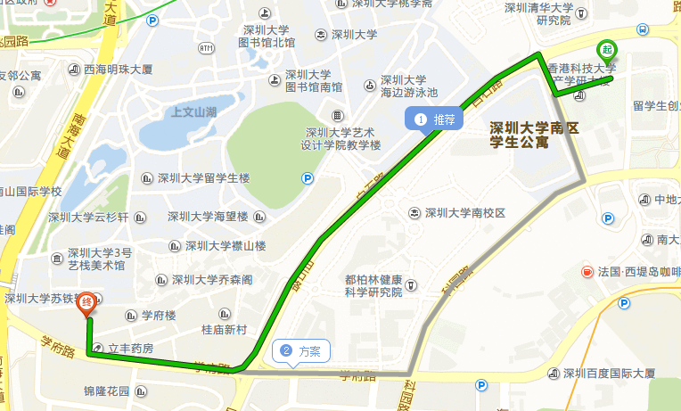

指引
地址:
香港城市大学产学研大楼, 深圳市南山区高新区南区粤兴一道8号.邮政编码:
518057来访提示
1. 从香港:
经深圳湾口岸:(1) 过关后搭乘的士前往香港城市大学深圳研究院（车程约10分钟）
(2) 从深圳湾口岸过关后乘坐机场8号线（往宝安机场方向）至粤海门村下（车程约20分钟），步行约1分钟路程至大楼
经罗湖口岸:
(1) 过关后搭乘的士前往香港城市大学深圳研究院（车程约30分钟）
(2) 从罗湖口岸乘地铁（罗宝线）至深大站C出口（车程约40分钟），步行约10分钟至大楼
经福田口岸:
(1) 过关后搭乘的士前往香港城市大学深圳研究院（车程约25分钟）
(2) 从福田口岸乘地铁（龙华线）至市民中心站换成罗宝线至深大站 （车程大约35分钟），步行约10分钟至大楼
经皇岗口岸:
过关后搭乘的士前往香港城市大学深圳研究院 （车程约20分钟）
2. 从宝安国际机场
(1) 从机场出口搭乘的士前往香港城市大学深圳研究院(车程约35分钟)(2) 在机场新航站楼站搭乘机场8号线至粤海门村站下 (车程约45分钟),步行约1分钟路程至大楼
(3) 在机场新航站楼站搭乘机场10号线只固戍站下车,转乘地铁(罗宝线)至深大站C出口 （车程约1个小时30分钟）,步行约10分钟至大楼
3. 从深圳火车站
火车北站:(1) 出站之后搭乘的士前往香港城市大学深圳研究院（车程约40分钟）
(2) 从深圳北站乘地铁(龙华线)至市民中心换成（罗宝线）至深大站C出口 (车程约1小时30分钟)
火车西站:
(1) 出站之后搭乘的士前往香港城市大学深圳研究院（车程约20分钟）
(2) 搭乘682路公交车到粤海门村公交站下车 (约40分钟)，步行至研究院（约1分钟）
火车东站:
(1) 出站之后搭乘的士前往香港城市大学深圳研究院（车程约40分钟）
(2) 从深圳东站乘地铁（环中线）至黄贝岭站换成（蛇口线）至科苑站D出口（约1小时30分钟），步行约10分钟至大楼

丽雅查尔顿酒店
地址:
南山区高新科技园高新南四道 距离香港城市大学深圳研究院1.3公里
价格:
人民币800/元（含早）另需加收15%服务费

凯宾斯基酒店
地址:
南山区后海滨路海德三道 距离香港城市大学深圳研究院2.5公里
价格:
人民币868/元（含早）另需加收15%服务费

博林诺富特酒店
地址:
福田区侨城东路2002号 距离香港城市大学深圳研究院7.6公里
价格:
人民币689/元（含服务费含早餐）

新桃园酒店
地址:
南山区文心五路33号海岸城大厦东座 距离香港城市大学深圳研究院2.5公里
价格:
人民币530/元（含服务费含早）

深圳蓬克精品酒店 （海岸城店）
地址:
南山区海岸城后海大道与创业路交汇处电力花园 距离香港城市大学深圳研究院2.5公里
价格:
人民币466/元 (含服务费含早餐)

枫叶酒店
地址:
南山区学府路6号（学林雅苑对面），近南山海岸城 距离香港城市大学深圳研究院2.5公里
价格:
人民币250/元（含服务费含早）
